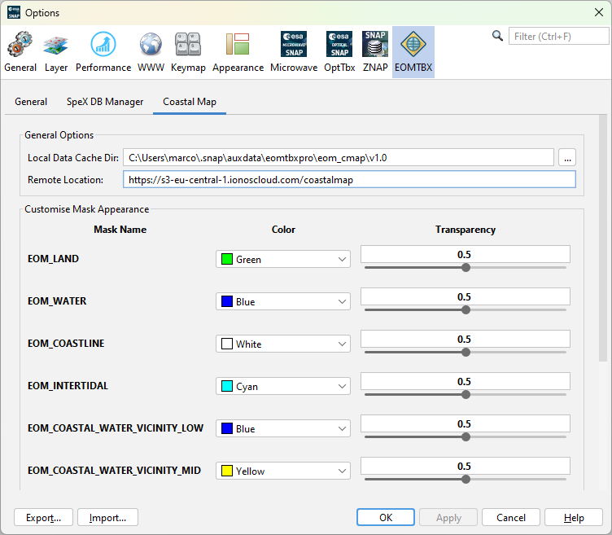

|
|
EOMasters Toolbox | |
In the options of SNAP some settings can be modified.

This defines the local directory where downloaded coastal map data is stored.
From this location the coastal map data is downloaded if it is not already found in the local data cache directory.
For each flag a mask can be created by the Coastal Map tools. Here the default color and the default transparency can be changed. Following the application default values are shown.
| EOM_LAND | 0.5 | Land pixels | |
| EOM_WATER | 0.5 | Water pixels | |
| EOM_COASTLINE | 0.5 | Coastline pixels | |
| EOM_INTERTIDAL | 0.5 | Intertidal pixels | |
| EOM_COASTAL_WATER_VICINITY_LOW | 0.5 | Low vicinity score for water pixels | |
| EOM_COASTAL_WATER_VICINITY_MID | 0.5 | Intermediate vicinity score for water pixels | |
| EOM_COASTAL_WATER_VICINITY_HIGH | 0.5 | High vicinity score for water pixels | |
| EOM_COASTAL_LAND_VICINITY_LOW | 0.5 | Low vicinity score for land pixels | |
| EOM_COASTAL_LAND_VICINITY_MID | 0.5 | Intermediate vicinity score for land pixels | |
| EOM_COASTAL_LAND_VICINITY_HIGH | 0.5 | High vicinity score for land pixels |